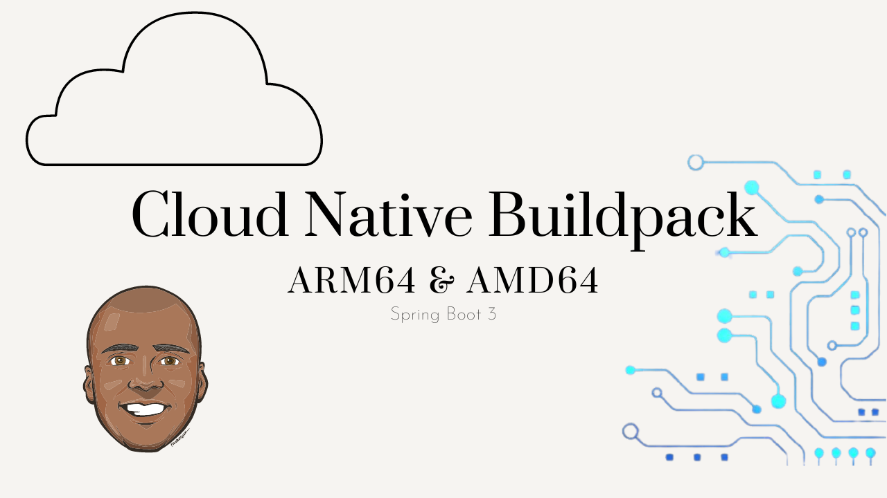

I’m trying to expand the type of content that I create. I’ve been motivated to start creating more video content for YouTube. I’ve just had a hard time getting started. Very similar to getting out the door for a run.
It only took me about 4-hours to record, edit and publish the 9-minute video. My last attempt at something like this took over 8-hours to deliver a 1-minute video. I’m trending in the right direction.